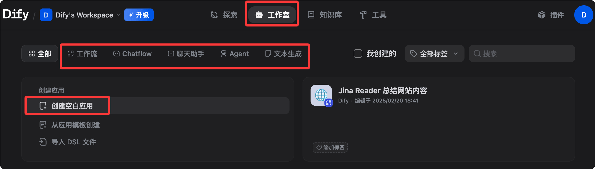
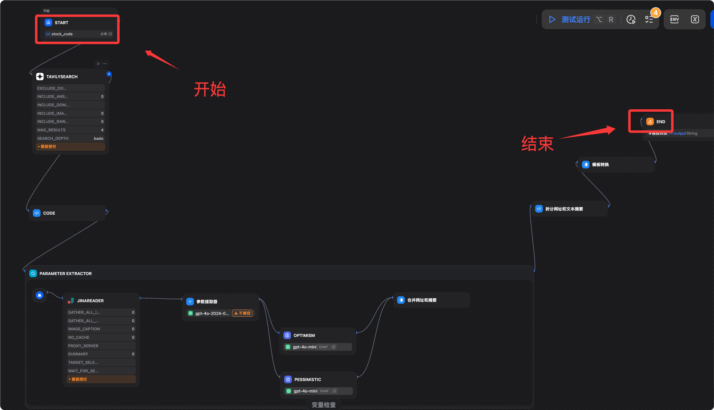

Dify 入门教程
Dify（Do It For You）是当前最受欢迎的开源 LLM 应用开发平台，专为构建由大型语言模型（LLM）驱动的生成式 AI 应用而设计。
Dify 将 AI 工作流编排、RAG 知识库、Agent 框架、模型管理、可观测性整合在一个可视化平台里，让你快速从原型走向生产，无需从零搭建 LLM 基础设施。
Dify 通过集成 RAG 流水线、AI 工作流、可观测性工具和模型管理，简化了 AI 应用的创建过程。
如果说 LangChain 是AI 应用的零件工厂（灵活但需要大量手写代码），那 Dify 就是 AI 应用的可视化 IDE ——组件都在，拖拽连线就能跑。

和其他工具的对比
以下是 Dify 与 LangChain、n8n 在关键维度上的对比。
| 维度 | Dify | LangChain | n8n |
|---|---|---|---|
| 主要用户 | 开发者 + 产品经理 | 开发者 | 运营/自动化 |
| 编程要求 | 低代码 / 无代码 | 需要写 Python/JS | 低代码 |
| RAG 内置 | 完整内置 | 需要手动组装 | 有限 |
| Agent 框架 | 内置 | 内置 | 有限 |
| 可观测性 | 内置 | 需第三方 | 有限 |
| 自托管 | 完全支持 | 支持 | 支持 |
| 许可证 | Apache 2.0 | MIT | Fair-code |
Dify 的直观可视化编排工作室使其成为需要快速构建功能性 AI 应用的初创公司和企业的理想选择。
LangChain 则更适合需要自定义集成和开发者深度参与的企业级复杂应用。
谁在用 Dify？
从生物医学到汽车行业，Dify 为各类企业提供可靠的解决方案。
Volvo Cars 在 AI 前沿战略导航中使用 Dify 快速验证想法。
用户对 Dify 的高度评价是其能够将 AI Agent 开发民主化，将强大的 AI/ML 能力结合到无代码平台上。
核心概念
在开始操作之前，我们先了解一下 Dify 的基本概念：
| 概念 | 说明 |
|---|---|
| 应用（App） | Dify 里的基本部署单元。每个应用对应一个独立的 AI 功能，有自己的 System Prompt、关联的知识库、工具配置和 API Key。 |
| 知识库（Knowledge Base） | 知识库是你自己的数据集合，可以集成到 AI 应用中。它让 LLM 在回答时以你的专有数据作为额外的真实来源，确保回答更准确、更相关、更不容易产生幻觉。 |
| RAG（检索增强生成） | 当用户提出问题时，系统首先从知识库中检索最相关的信息（Retrieval），然后将检索结果与用户原始问题组合后发送给 LLM（Augmented），LLM 基于此上下文生成更精准的答案（Generation）。 |
| Workflow（工作流） | 在可视化画布上构建和测试强大的 AI 工作流，通过拖拽节点和连线来定义多步骤的 AI 处理逻辑。 |
| Agent（智能体） | 可以基于 LLM Function Calling 或 ReAct 定义 Agent，并为其添加预构建或自定义工具。Dify 为 AI Agent 提供 50 多个内置工具，如 Google Search、DALL E、Stable Diffusion 和 WolframAlpha。 |
| 节点（Node） | 工作流的基本单元，每个节点执行一个具体操作：LLM 推理、知识检索、代码执行、HTTP 请求、条件分支等。 |
安装与启动
四种安装方式，从零秒上手到高可用集群部署。
方式一：Dify Cloud（最快，0 秒上手）
访问 cloud.dify.ai，注册账号即可立即使用。
免费的 Sandbox 套餐包含每月 200 条消息和 5 个应用，无需配置任何环境。
适合快速体验、个人项目、测试原型。

方式二：Docker Compose 自托管（推荐生产使用）
适合有技术背景的用户，完全掌控数据和部署环境。
系统要求
| 资源 | 最低要求 | 推荐配置 |
|---|---|---|
| CPU | 2 核 | 4 核 |
| 内存 | 4 GB | 8 GB |
| 磁盘 | 20 GB | 50 GB+ |
| Docker | Engine 20.10+ | 最新版 |
| Docker Compose | v2.2+ | 最新版 |
安装步骤
第一步：克隆仓库
克隆 Dify 仓库到本地:
git clone https://github.com/langgenius/dify.git cd dify
第二步：进入 docker 目录，复制环境配置
cd docker # 从模板复制环境配置文件 cp .env.example .env
第三步（重要）：配置 SECRET_KEY
从 v1.14.1 起，Docker 部署不再依赖公开的默认密钥。当 SECRET_KEY 为空时，API 会自动生成并持久化一个运行时密钥。建议在 .env 文件中明确设置。
# 生成一个安全的随机密钥 openssl rand -base64 42
编辑 .env 文件，找到 SECRET_KEY 并设置为上面生成的随机字符串：
SECRET_KEY=your-very-long-random-secret-key-here
第四步：启动服务
# 启动所有 Dify 服务（首次会拉取镜像，约需 3-10 分钟） docker compose up -d
第五步：访问并初始化
浏览器访问 http://localhost/install，完成管理员账号注册。
第六步：验证服务状态
# 查看所有容器状态，全部为 healthy 即表示运行正常 docker compose ps
所有容器（api、worker、web、db、redis、weaviate、nginx 等）状态均为 healthy 即表示运行正常。
停止与重启
# 停止所有服务（数据保留在 Docker volumes 中） docker compose down # 重新启动所有服务 docker compose up -d
升级到新版本
# 进入 docker 目录 cd dify/docker # 拉取最新代码 git pull origin main # 拉取新镜像 docker compose pull # 重新启动 docker compose up -d
数据持久化在 Docker volumes 中，更新不会影响已有的应用、知识库或对话历史。在大版本升级前建议备份 PostgreSQL 数据库。
方式三：AWS Marketplace 一键部署
面向在 AWS 上运营的初创公司和小型企业，可以通过 AWS Marketplace 上的 Dify Premium 实现一键部署到自己的 AWS VPC，还支持自定义 Logo 和品牌。
方式四：Kubernetes 部署（高可用）
对于需要高可用配置的场景，社区提供了 Helm Charts 和 YAML 文件，可以将 Dify 部署到 Kubernetes 集群。
# 添加 Dify Helm 仓库 helm repo add dify https://langgenius.github.io/dify-helm # 使用自定义 values.yaml 安装 helm install dify dify/dify -f values.yaml
配置模型提供商
安装完成后，第一步是连接你的 AI 模型。
操作路径
登录 Dify 后，点击右上角头像，进入 Settings（设置），选择 Model Provider（模型提供商）。

比如我们可以安装 DeepSeek 这个模型供应商，然后配置 API key：

主流提供商配置
Anthropic（Claude 系列）：
Provider: Anthropic API Key: sk-ant-xxxxxxxx（从 console.anthropic.com 获取） 推荐模型：claude-sonnet-4-6（综合性能最佳）
OpenAI：
Provider: OpenAI API Key: sk-xxxxxxxx（从 platform.openai.com 获取） 推荐模型：gpt-4o（性价比高）
Google（Gemini 系列）：
Provider: Google API Key: xxxxxxxx（从 aistudio.google.com 获取） 推荐模型：gemini-2.0-flash（速度快，适合大量请求）
OpenRouter（一个 Key 访问 300+ 模型）：
Provider: OpenRouter API Key: sk-or-xxxxxxxx（从 openrouter.ai 获取） Base URL: https://openrouter.ai/api/v1
本地模型（Ollama）：
Provider: Ollama Base URL: http://host.docker.internal:11434 # Docker 内访问宿主机 （先在宿主机运行：ollama pull llama3.3）
配置 Embedding 模型（知识库必需）
知识库的向量化需要 Embedding 模型，以下是推荐选项：
| 模型 | 特点 | 适用场景 |
|---|---|---|
| OpenAI text-embedding-3-small | 便宜，效果好 | 通用场景 |
| Zhipu AI embedding-3 | 中文支持优秀 | 中文为主的内容 |
| 本地 nomic-embed-text（Ollama） | 完全离线 | 数据安全要求高 |
验证模型可用
回到 Settings，找到已配置的提供商，点击模型名旁边的 Test 按钮，显示绿色勾号则配置成功。
五种应用类型详解
在 Dify 首页点击 Create App（创建应用），会看到五种类型，每种对应不同的使用场景。

点击创建空白应用，可以看到五种类型的应用：

1. Chatbot（聊天助手）
标准的多轮对话应用，有持久的会话记忆。
| 属性 | 说明 |
|---|---|
| 适合场景 | 客服机器人、私人助理、FAQ 问答 |
| 核心特点 | 内置对话记忆（可配置记忆策略）、可附加知识库（启用 RAG）、支持流式输出、一键发布为网页嵌入代码 |
2. Text Generator（文本生成器）
单次输入到单次输出，不保留对话历史。
| 属性 | 说明 |
|---|---|
| 适合场景 | 文章改写、摘要生成、SEO 文案、邮件起草 |
| 核心特点 | 结构清晰（输入表单 + 输出文本）、适合批量处理、支持变量占位符（如 {{product_name}}） |
3. Agent（智能体）
能主动调用工具、自主规划和执行多步骤任务的 AI。
| 属性 | 说明 |
|---|---|
| 适合场景 | 数据查询与分析、搜索与总结、代码执行 |
| 核心特点 | 支持 Function Calling 和 ReAct 两种推理模式、内置 50+ 工具（搜索、图像生成、代码解释器等）、支持自定义 API 工具、工具调用过程对用户可见 |
4. Chatflow（对话流）
在 Workflow 的基础上加入多轮对话能力，兼具流程编排和会话上下文。
| 属性 | 说明 |
|---|---|
| 适合场景 | 复杂的客服流程、需要多步骤判断的对话机器人 |
| 核心特点 | 既有 Workflow 的节点编排能力，又保留对话的多轮记忆，可以在对话中触发自动化流程 |
5. Workflow（工作流）
纯自动化的多步骤处理流程，不带对话界面，通过 API 触发或手动运行。
| 属性 | 说明 |
|---|---|
| 适合场景 | 批量数据处理、定时自动化任务、后端 AI 处理流水线 |
| 核心特点 | 在可视化画布上构建和测试 AI 工作流、支持并行分支和循环及条件判断、支持 Human-in-the-Loop（Human Input 节点）、输出结果可对接其他系统 |
选择指南
根据需求快速决定使用哪种应用类型：
需要多轮对话？
├─ 是 → 需要复杂流程逻辑？
│ ├─ 是 → Chatflow
│ └─ 否 → Chatbot 或 Agent（需要工具调用时选 Agent）
└─ 否 → 单次输入输出？
├─ 是 → Text Generator
└─ 需要多步骤自动化 → Workflow
知识库（RAG）：让 AI 回答你的私有数据
知识库是 Dify 最强大的功能之一，也是大多数企业应用的核心。
创建知识库
- 导航栏选择 Knowledge（知识库），点击 Create Knowledge（创建知识库）
- 给知识库命名，如「产品手册」或「内部政策文件」
- 选择创建方式

方式一：上传文件（最常用）
Dify 接受 PDF、Word（.docx）、Markdown（.md）、纯文本（.txt）、CSV 和 HTML 格式的文件。
推荐使用 Markdown 或纯文本，它们解析最可靠。
布局复杂或扫描版的 PDF 可能需要预处理，建议先用 OCR 工具提取文本后再上传。
方式二：Knowledge Pipeline（企业级）
Knowledge Pipeline 是一个可视化的节点式编排系统，专门用于文档摄取处理。
它解决了传统 RAG 的三大痛点：分散的数据源、解析过程中的信息丢失（图表和公式被丢弃）、以及黑盒处理过程（难以诊断失败原因）。
方式三：外部知识库 API
通过 API 同步现有的外部知识库，无需数据迁移。
文档分块策略
上传后，Dify 会自动进行文本分块（Chunking）。关键参数说明如下：
| 参数 | 说明 | 推荐值 |
|---|---|---|
| 分块大小 | 每个 Chunk 的 Token 数 | 500-1000（中文） |
| 分块重叠 | 相邻 Chunk 的重叠 Token 数 | 50-100 |
| 分隔符 | 按什么切割（段落/句子） | 段落 |
中文内容建议分块大小设置在 500 Token 左右。太长会让检索不够精准，太短会丢失上下文。
索引模式
| 模式 | 说明 | 成本 |
|---|---|---|
| 高质量（默认） | 使用 Embedding 模型生成向量，效果最好 | 消耗 Embedding API |
| 经济模式 | 倒排索引（关键词匹配），无需 Embedding | 免费 |
检索配置
进入知识库，选择 Settings，配置检索参数：
| 检索方式 | 说明 | 适用场景 |
|---|---|---|
| 向量检索 | 语义相似度匹配 | 意义相关的查询 |
| 全文检索 | 关键词匹配 | 精确词汇查询 |
| 混合检索（推荐） | 结合两者，并用重排序模型提升精度 | 通用场景 |
相似度阈值建议设置 0.5-0.7。
相似度阈值太高会导致无结果返回，太低会返回不相关内容。建议从 0.6 开始测试，根据效果微调。
测试检索效果
在知识库中点击 Retrieval Testing（检索测试），输入测试问题，直接查看返回的 Chunk，验证检索质量，无需真实发起对话。
将知识库关联到应用
在应用编辑页面，选择 Context（上下文），点击 Add（添加），选择已创建的知识库并保存。
关联后，该应用的每次对话都会先检索知识库再回答。
Workflow 工作流：可视化编排多步骤任务
通过拖拽节点和连线来定义多步骤的 AI 处理逻辑。
进入 Workflow 编辑器
创建应用时选择 Workflow，或在现有 Workflow 应用里点击 Edit（编辑）进入画布。

主要节点类型
以下是 Workflow 编辑器中最常用的节点及其功能：
| 节点 | 功能 | 典型用途 |
|---|---|---|
| Start | 流程入口，定义输入变量 | 接收用户输入或外部参数 |
| LLM | 调用语言模型 | 文本生成、分析、翻译 |
| Knowledge Retrieval | 从知识库检索 | RAG 场景 |
| IF/ELSE | 条件分支 | 根据内容路由不同处理路径 |
| Code | 执行 Python 或 JS 代码 | 数据转换、格式处理、计算 |
| HTTP Request | 调用外部 API | 查询数据库、发送通知 |
| Template | 变量模板渲染 | 组合多个节点的输出 |
| Variable Assigner | 设置/更新变量 | 跨节点传递数据 |
| Iteration | 循环处理列表 | 批量处理多条数据 |
| Agent | 内嵌 Agent 节点 | 让工作流中的某一步具备自主推理能力 |
| Human Input | 暂停等待人工审核 | 人机协作的关键决策点 |
| End | 流程出口，定义输出 | 返回最终结果 |

节点间的变量传递
每个节点的输出可以被后续节点引用，语法是 {{节点名.输出变量名}}。
以下是一个典型的 RAG 问答工作流的变量传递示例：
Start 节点输出 user_query
↓
Knowledge Retrieval 节点：
输入：{{Start.user_query}}
输出：result（检索结果）
↓
LLM 节点：
System Prompt：你是一个客服助理，根据以下资料回答问题
User：用户问题：{{Start.user_query}}
参考资料：{{Knowledge Retrieval.result}}
↓
End 节点：
返回：{{LLM.text}}
Human Input 节点（HITL）
Human Input 节点是一项重大更新，它让工作流可以在关键决策点暂停执行。
该节点会生成一个 UI 界面供人工审查和修改变量（例如编辑草稿或纠正数据），然后根据自定义按钮（如「批准」、「拒绝」或「升级」）决定后续路径。
这解决了之前工作流「要么完全自动化、要么完全手动」的二元困境，让高风险场景（合同审查、医疗建议、金融决策）也能用上自动化 AI。
调试工作流
画布右上角点击 Run（运行），输入测试参数，观察每个节点的输入/输出和耗时。
节点旁会出现绿色（成功）或红色（失败）标记，点击可查看详细执行日志。
场景实战一：企业内部知识问答机器人
用 Dify 搭建一个能准确回答内部文档问题的聊天机器人，回答带来源引用。
业务背景
公司有大量内部文档（HR 政策、产品手册、技术 Wiki），员工经常需要查找信息，但文档分散、搜索困难。
步骤一：准备知识库
- 整理文档：把 HR 政策（PDF）、产品手册（Word）、技术 Wiki（Markdown）导出备用
- 在 Knowledge 选择 Create Knowledge，命名「公司内部知识库」
- 上传文件，选择高质量索引模式
- 等待向量化完成（进度条显示）
文档质量优化技巧：删除不相关的信息、页眉页脚和特殊字符。使用清晰的标题和简短段落。如果一个文档涵盖多个不同主题，考虑拆分成独立文件。
步骤二：创建 Chatbot 应用
- 点击 Create App，选择 Chatbot，命名「内部助手」
- 选择模型（推荐 Claude Sonnet 4.6 或 GPT-4o）
- 编写 System Prompt

你是公司内部知识助手，专门帮助员工查找内部文档信息。 行为准则： - 只根据提供的知识库内容回答，不要编造信息 - 回答时注明来源文档名称 - 如果知识库中没有相关信息，直接说"我在文档中没有找到相关信息"，并建议联系对应部门 - 使用简洁、专业的语言 - 不讨论公司机密以外的话题
- 在 Context 中点击 Add，选择「公司内部知识库」
- 配置检索参数：混合检索，相似度阈值 0.6，返回 Top 5 片段
步骤三：测试与调优
用真实问题测试，以下是推荐的测试用例：
测试问题示例： "年假怎么申请？" → 应该从 HR 政策文档返回正确步骤 "产品 A 的定价是多少？" → 应该从产品手册返回准确价格 "如何配置 VPN？" → 应该从技术 Wiki 返回步骤 "CEO 是谁？" → 如果文档中没有，应该诚实说不知道
常见调优操作
| 问题 | 解决方案 |
|---|---|
| 答案不准 | 降低相似度阈值（如 0.5），增加返回 Chunk 数量 |
| 答案不相关 | 提高阈值（如 0.7），检查文档分块是否合理 |
| 答案不完整 | 增大分块大小，让每个 Chunk 包含更完整的段落 |
步骤四：发布与集成
发布为网页应用：应用页面选择 Overview，点击 Embedded，复制嵌入代码，粘贴到内部 Wiki 或 Intranet 页面。
发布为 API：应用页面选择 API Reference，复制 API Key，调用示例：
# 调用聊天 API，向知识问答机器人发送问题
curl -X POST 'https://api.dify.ai/v1/chat-messages' \
-H 'Authorization: Bearer app-xxxxxxxx' \
-H 'Content-Type: application/json' \
-d '{
"inputs": {},
"query": "年假怎么申请？",
"response_mode": "blocking",
"user": "employee-001"
}'
场景实战二：自动化内容生成流水线
使用 Workflow 并行生成面向不同渠道的营销内容。
业务背景
市场团队需要将产品更新日志（技术语言）批量转化为面向不同渠道的内容：微信公众号推文、技术博客、短视频脚本。
工作流设计
Start（输入：更新日志文本） ↓ 并行分支 ├─→ LLM-1：生成微信推文（轻松活泼，500字，含表情符号） ├─→ LLM-2：生成技术博客（专业详细，1500字，含代码示例） └─→ LLM-3：生成短视频脚本（口语化，300字，分镜头格式） ↓ 合并 End（输出：三份内容）
具体搭建步骤
第一步：创建 Workflow 应用，命名「内容生成流水线」。
第二步：配置 Start 节点，添加输入变量：
| 变量名 | 类型 | 说明 |
|---|---|---|
| update_content | 文本类型 | 产品更新日志原文 |
| product_name | 文本类型 | 产品名称 |
| version | 文本类型 | 版本号 |
第三步：添加三个 LLM 节点（并行）。
将三个 LLM 节点都连接到 Start 节点，Dify 会自动并行执行。
LLM-1（微信推文）的 Prompt 示例：
你是一位擅长社交媒体写作的内容创作者。
请将以下 {{product_name}} v{{version}} 的更新日志改写成微信公众号推文：
- 字数：400-600字
- 语气：轻松活泼，贴近用户
- 结构：开头吸引眼球，中间介绍亮点，结尾引导互动
- 适当使用 emoji
- 不要使用技术术语，用用户能理解的语言
更新日志原文：
{{Start.update_content}}
LLM-2（技术博客）和 LLM-3（短视频脚本）类似配置，调整 Prompt 和模型即可。
第四步：添加 End 节点，输出变量配置：
wechat_post：引用 {{LLM-1.text}}
tech_blog：引用 {{LLM-2.text}}
video_script：引用 {{LLM-3.text}}
第五步：通过 API 集成到内部工具。
实例
def generate_content(update_content: str, product_name: str, version: str):
"""调用 Dify Workflow API 批量生成多版本内容"""
# API 地址：使用你的 Dify 实例域名替换 api.dify.ai
url = "https://api.dify.ai/v1/workflows/run"
# 请求头：替换为你的应用 API Key
headers = {
"Authorization": "Bearer app-xxxxxxxx", # 必填：应用 API Key
"Content-Type": "application/json"
}
# 请求体：传入 Start 节点定义的三个输入变量
payload = {
"inputs": {
"update_content": update_content, # 更新日志原文
"product_name": product_name, # 产品名称
"version": version # 版本号
},
"response_mode": "blocking", # 阻塞模式，等待完整结果
"user": "content-team" # 用户标识，用于日志追踪
}
response = requests.post(url, headers=headers, json=payload)
# 从响应中提取 outputs 字段，包含三个 LLM 节点的生成结果
return response.json()["data"]["outputs"]
场景实战三：客服支持 Agent（含 Human-in-the-Loop）
搭建智能客服工单处理系统，AI 自动处理标准问题，复杂问题转人工并附带预分析。
业务背景
电商平台的客服工单日均 500+，大部分是标准问题（物流查询、退货政策），但约 20% 需要人工处理（复杂投诉、大额退款）。
工作流设计
Start（接收用户工单：问题类型 + 内容 + 订单号）
↓
LLM-分类：判断问题类型（standard / complex）
↓
IF/ELSE：问题类型是否为 standard？
├─ standard →
│ Knowledge Retrieval（从客服知识库检索）
│ ↓
│ LLM-回复：生成标准回答
│ ↓
│ End（直接回复用户）
│
└─ complex →
LLM-预分析：生成问题摘要和建议处理方案
↓
Human Input（人工审核，可编辑 AI 建议，选择"批准"/"修改"/"升级"）
↓
End（发送经过人工确认的回复）
关键节点配置
分类 LLM 节点（输出结构化 JSON）：
实例
"system": "你是一个客服工单分类专家。请分析以下工单，输出 JSON 格式的分类结果。",
"output_schema": {
"category": "standard 或 complex",
"reason": "分类理由（一句话）",
"priority": "low / medium / high"
},
"criteria": {
"standard": "物流查询、退货政策、普通退款（<500元）、账号问题",
"complex": "大额退款（>500元）、投诉、纠纷、产品质量问题"
}
}
Human Input 节点配置：
| 配置项 | 说明 |
|---|---|
| 显示内容 | AI 预分析结果 + 建议回复草稿 |
| 可编辑字段 | 回复内容、优先级 |
| 自定义按钮 | 批准（按 AI 建议回复）、修改后批准（人工编辑后回复）、升级处理（转专项处理团队） |
效果预期
| 工单类型 | 处理方式 | 效果提升 |
|---|---|---|
| 标准问题（约 80%） | AI 全自动处理 | 响应时间从 4 小时降到 30 秒 |
| 复杂问题（约 20%） | AI 辅助人工，提供分析和草稿 | 人工处理时间减少 60% |
| 整体 | - | 工单处理效率提升约 3 倍 |
对外发布：API、网页嵌入与 MCP 服务器
将 Dify 应用发布到外部系统，支持 API 调用、网页嵌入和 MCP 服务器三种方式。
发布为 API
每个 Dify 应用都自动拥有 REST API。在应用页面选择 API Access（API 访问）获取。
聊天应用 API 调用示例：
# 调用聊天 API（流式返回模式）
curl -X POST 'https://api.dify.ai/v1/chat-messages' \
-H 'Authorization: Bearer {API_KEY}' \
-H 'Content-Type: application/json' \
-d '{
"inputs": {},
"query": "你好",
"response_mode": "streaming",
"conversation_id": "",
"user": "user-001"
}'
工作流应用 API 调用示例：
# 调用 Workflow API（阻塞模式）
curl -X POST 'https://api.dify.ai/v1/workflows/run' \
-H 'Authorization: Bearer {API_KEY}' \
-H 'Content-Type: application/json' \
-d '{
"inputs": {"your_variable": "your_value"},
"response_mode": "blocking",
"user": "user-001"
}'
API Key 格式以 app- 开头。确保在请求头中以 Authorization: Bearer 方式传递，而不是作为查询参数。每个 API Key 只对应一个具体应用，不同应用的 Key 不通用。
网页嵌入
在应用页面选择 Overview，点击 Embedded，提供三种嵌入方式：
方式一：iframe 嵌入
实例
<iframe
src="https://udify.app/chatbot/xxxxxxxx"
style="width: 100%; height: 100%; min-height: 700px"
frameborder="0"
allow="microphone">
</iframe>
方式二：气泡按钮（悬浮在网页右下角）
实例
<script>
window.difyChatbotConfig = { token: 'xxxxxxxx' }
</script>
<script
src="https://udify.app/embed.min.js"
id="xxxxxxxx"
defer>
</script>
方式三：全屏网页，独立访问，直接分享链接 https://udify.app/chat/xxxxxxxx。
发布为 MCP 服务器
Dify 支持将构建好的工作流或 Agent 发布为标准 MCP 服务器，支持预授权和免鉴权模式。
这意味着：你在 Dify 里搭建的知识库问答应用，可以直接成为 Claude Code、Cursor、omp 等 AI 编程工具的一个工具节点，无缝集成到开发工作流里。
操作路径：应用中选择 Publish，点击 MCP Server。
可观测性：监控与持续优化
通过日志、标注、统计和外部平台集成，持续监控和优化 AI 应用的表现。
查看应用日志
在应用页面选择 Logs（日志），可以查看每次对话的完整输入/输出、Token 用量（输入和输出分别统计）、响应时间、模型和参数信息。
给对话打标注
在日志里点击具体对话，点击回答旁的点赞或点踩按钮，可以添加理想回答作为标注。
标注数据的用途包括：通过标注构建微调数据集、识别知识库缺失的覆盖领域、发现频繁出错的问题类型。
应用数据统计
在应用页面选择 Overview，点击 Analytics（数据分析），可以查看：
| 统计项 | 说明 |
|---|---|
| 对话数量趋势 | 日/周/月维度的对话量变化 |
| 平均 Token 消耗 | 单次对话的 Token 用量均值 |
| 用户满意度评分 | 点赞/点踩分布统计 |
| 活跃用户数 | 使用该应用的去重用户数 |
集成外部观测平台
Dify 支持 Opik、Langfuse 和 Arize Phoenix 等观测平台。
以 Langfuse 为例：在 Settings 中选择 Monitoring，选择 Langfuse，输入 Public Key 和 Secret Key 后保存。之后所有应用的调用链路会自动同步到 Langfuse，可以查看完整的 Span 追踪和 Token 开销明细。
持续优化循环
推荐建立以下持续优化流程：
部署上线 ↓ 收集对话日志（1-2 周） ↓ 分析差评对话：哪些问题回答得不好？ ↓ 改进知识库（补充文档、调整分块）或优化 Prompt ↓ A/B 测试：对比改进前后的效果 ↓ 再次部署
费用与套餐
了解 Dify Cloud 和自托管的费用结构，选择最适合你的方案。
Dify Cloud 套餐
| 套餐 | 月费 | 说明 |
|---|---|---|
| Sandbox | 免费 | 200 消息/月，5 个应用，适用体验场景 |
| Professional | $59/月 | 5,000 消息/月，50 个应用，支持团队协作 |
| Team | $159/月 | 10,000 消息/月，无限应用，优先支持 |
| Enterprise | 定制 | 无限使用，私有部署选项，SLA 保障 |
自托管成本
自托管社区版完全免费，无任何使用限制。
你只需要支付服务器托管费用（一台 VPS 约 $5-50/月）以及 AI 模型的 API 调用费用。
费用估算（自托管，10,000 次对话/月）：
| 组件 | 费用估算 |
|---|---|
| VPS（4 核 8 GB） | $20-40/月 |
| Claude Sonnet 4.6（每次对话约 1K Token） | ~$30/月 |
| Embedding（text-embedding-3-small） | ~$2/月 |
| 合计 | ~$52-72/月 |
对比 Dify Cloud Professional（$59/月，还需加上模型 API 费用），自托管在大量使用时通常更经济。
降低成本的技巧
| 技巧 | 说明 |
|---|---|
| 知识库用经济模式索引 | 已有关键词搜索够用时，无需向量化 |
| 选择合适的模型 | 简单问答用 GPT-4o-mini 或 Gemini Flash，复杂任务再用旗舰模型 |
| 设置 Token 上限 | 在 LLM 节点设置 max_tokens，防止单次调用过长 |
| 启用缓存 | 相似问题自动复用上一次的回答（Prompt Cache） |
常见问题与排查
涵盖启动、知识库检索、API 调用和工作流四大类常见问题的排查方法。
启动问题
问题：docker compose up -d 后服务不健康
实例
docker compose logs api
# 查看 worker 容器日志
docker compose logs worker
# 检查内存是否充足（至少需要 4 GB）
free -h
# 检查端口是否被占用（80 或 443）
sudo lsof -i :80
问题：访问 http://localhost 显示 502 Bad Gateway
实例
docker compose ps
# 确认 api、web、worker 全部为 healthy 状态后重新访问
知识库检索问题
问题：知识库检索不到相关内容
排查步骤：
- 在知识库中点击 Retrieval Testing，测试具体问题，确认能否检索到
- 如果检索不到：调低相似度阈值（从 0.6 降到 0.3），测试是否有结果
- 如果仍无结果：确认 Embedding 模型配置正确，知识库索引是否完成
- 如果有结果但内容不对：检查文档分块策略，考虑手动拆分大文件
问题：RAG 返回内容不相关
检查检索到的 Chunk 内容。如果 Chunk 不相关，减小分块大小并提高分数阈值。如果没有返回 Chunk，阈值可能设置过高，暂时降低到 0.3 再测试。同时确认知识库已经关联到应用的编排面板中。
API 调用问题
问题：API 返回 401 Unauthorized
验证 API Key 格式——Dify 应用 API Key 以 app- 开头。确保在请求头中以 Authorization: Bearer 方式传递，而不是作为查询参数。还要确认这个 API Key 属于正确的应用——Key 是应用级别的，不同应用的 Key 不通用。
问题：流式响应中途截断
这通常是超时问题。检查反向代理的超时设置——Nginx 默认 60 秒，对复杂工作流可能不够。
# nginx.conf 中增加超时配置，确保长时间运行的工作流不被中断 proxy_read_timeout 300s; proxy_connect_timeout 300s; proxy_send_timeout 300s;
工作流问题
问题：工作流某个节点报错
排查步骤：
- 打开调试面板，查看报错节点的输入/输出
- 点击节点旁的红色标记，查看详细错误信息
- 常见原因：变量引用路径错误（检查 {{节点名.变量名}} 的拼写）
资源
推荐学习路径和相关资源，帮助你从入门到精通。
推荐学习路径
注册 Dify Cloud，用 Sandbox 体验
↓
配置自己的模型提供商（Anthropic 或 OpenAI）
↓
创建第一个知识库，上传 5-10 个文档，测试检索效果
↓
创建 Chatbot 应用，关联知识库，完成场景实战一
↓
学习 Workflow，完成场景实战二（内容生成流水线）
↓
探索 Human Input 节点，完成场景实战三（客服 Agent）
↓
用 Docker Compose 搭建本地/服务器自托管版本
↓
通过 API 将 Dify 应用集成到现有系统
↓
探索 MCP Server 发布，接入 AI 编程工具生态
官方资源
| 资源 | 链接 | 说明 |
|---|---|---|
| 官网 | dify.ai | 产品信息和注册入口 |
| 文档 | docs.dify.ai | 完整的产品使用文档 |
| GitHub | github.com/langgenius/dify | Apache 2.0 开源，可查看源码和提交 Issue |
| Discord 社区 | discord.gg/FngNHpbcY7 | 与社区成员和官方团队交流 |
| 模板市场 | 应用内 Templates | 直接使用社区分享的工作流模板 |
| Dify Blog | dify.ai/blog | 功能更新和使用案例 |
| 知识库 FAQ | docs.dify.ai/faq | 常见问题官方解答 |

点我分享笔记